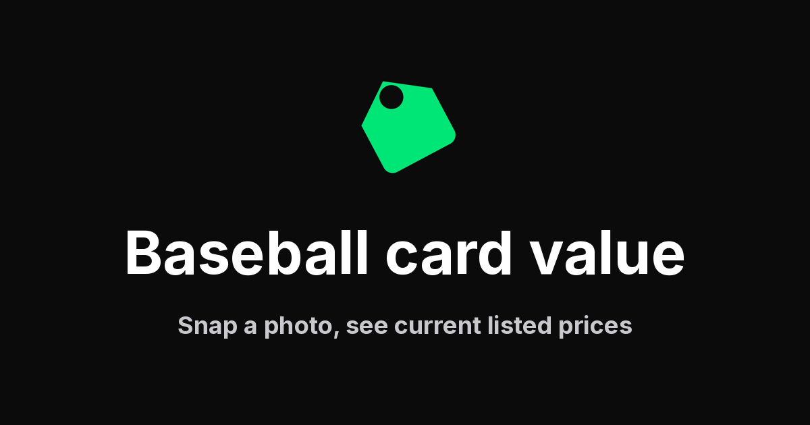

People often look up baseball card value after a box comes out of a closet, a childhood collection comes back from a relative, or a famous surname shows up in a search result. The first instinct is to trust the player name, or to copy a dramatic auction number onto whatever card happens to show the same face. That is how a common late-1980s or early-1990s card gets talked about like a scarce older issue, and how a later-year card or a reprint gets sold as if it were the rookie everyone saw online, because nobody checked the object itself.
If you want a useful baseball card value, check yours by photo. Start with the card in your hand, confirm the exact year, set, player, and condition, and look at a current listed range for that issue. That is what  How Much Is It Worth: Scanner is built to do.
How Much Is It Worth: Scanner is built to do.
Start with the year, the set name, the card number, and the player, not with a famous surname alone. Those details are usually on the back, along with copyright and set marks from makers such as Topps, Bowman, or Upper Deck. Photograph the front and the back, and crop tightly so the text is readable. A 1950s card and a 1990s card of a well-known player are not the same market, even if the name is the same.
If the card is in a graded slab, photograph the label as well as the card. The grade and the cert number are part of the identification. People search names such as Mickey Mantle or Nolan Ryan because those cards are famous. This page is not a celebrity price list, and we will not invent prices for those cards, or a player-by-player chart. If you have a card like that, identify the exact year, set, and number, then compare current listings for that exact issue and condition. A reprint, a later-year card, or a damaged copy is not the headline example you saw online.
A rookie card is a specific issue, not a later reprint or a card that merely shows a player early in a career, and two rookies of the same player from different sets are different markets. Take or upload up to three photos.
The app shows the identification first. If the year, the set, or whether the card is raw or graded looks off, you correct it before any price lookup. Then you see a Worth about figure, the listed range around it, a confidence level, and the live listings behind the number when there are enough of them. If the data is thin, the result is labelled as a rough estimate. The product will not invent a precise figure, and it is not a certified appraisal, an insurance valuation, or an offer to buy. A photo is a first look, not a formal appraisal.
Want to try it? Start your free 3-day trial in the iPhone app at https://apps.apple.com/app/id6832980231. 3 free scans + 3-day unlimited trial. You can also scan it online free at https://howmuchisitworth.today/baseball-card-value. On Android? Check https://howmuchisitworth.today/ for the Android release.
A raw card and a professionally graded card should be compared separately. A high grade can sit in a different listing set from a raw copy with soft corners or surface wear. Grading costs money and is not always worth it, especially on a common card. Do not assume a slab is genuine; compare the label with the grader's usual style if a price looks out of line.
Many baseball cards from the late 1980s and early 1990s were printed in very large numbers. That era is often called junk wax. Common cards from those years often sell for very little, even when the player is well known. Older, scarcer issues and true short prints are a different market. The year and the set tell you which side you are on more honestly than a "most valuable cards" list. Rookie cards are collected more than later-year cards of the same player, but only when you have the right set and the right issue.
The range we show comes from current public listings, which are asking prices. A sold price can be lower, and on common cards it often is. Trading card prices in the app use PokéWallet for supported card games, shown with a source credit where that data appears. If listings are thin, the result is labelled as a rough estimate rather than a precise number.
Trimmed edges, pressed creases, colour touch-up, and counterfeit slabs show up in this hobby. If a card looks unusually sharp for its age, or a grade looks too good, get a specialist opinion before you pay or sell on the strength of a single photo. Do not try to "improve" a card for the camera. Describe wear honestly. You can adjust the condition in a tap and watch the value update. If you decide to sell, you can copy a ready-made listing, with Quick sale, Fair price, or Top dollar, and save the scan to a collection. People sell sports cards on eBay, through specialist dealers, at local card shops, and at shows, and the app can draft a listing for eBay, Facebook Marketplace, or Gumtree. A shop may pay less than a patient private sale. For a single modest card, a local listing or a shop can be simpler than a long auction.
Viral "this card is worth a fortune" posts often mix famous-name headlines, junk-wax commons, and later reprints, and they skip the year and the set. We will not invent a price list for every player. Compare current public listings for the issue you have, and treat a specialist opinion as necessary when a card looks too good for its age.
The app is free to start. Start your free 3-day trial. 3 free scans + 3-day unlimited trial.
If you are trying to find baseball card value, check yours by photo. Download the app and scan your first card free, or start at https://howmuchisitworth.today/baseball-card-value.